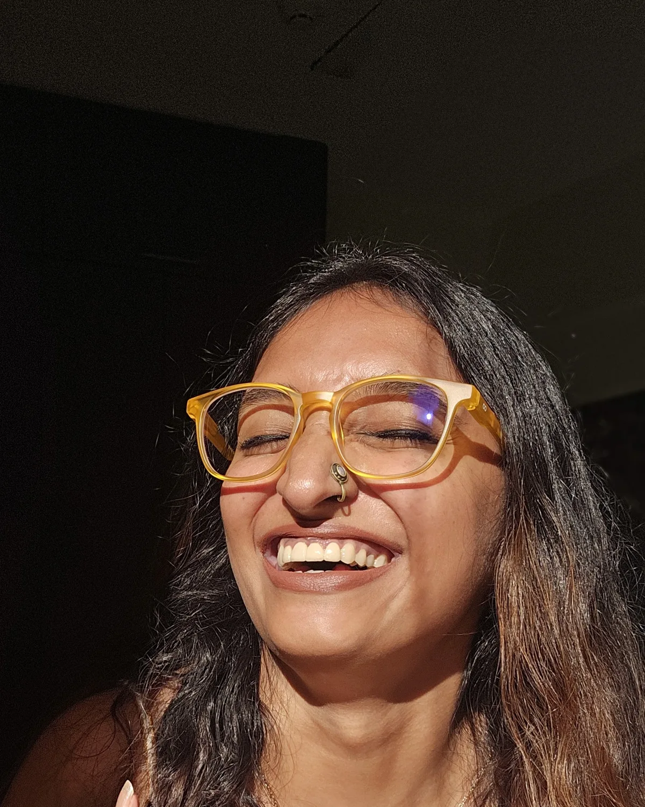
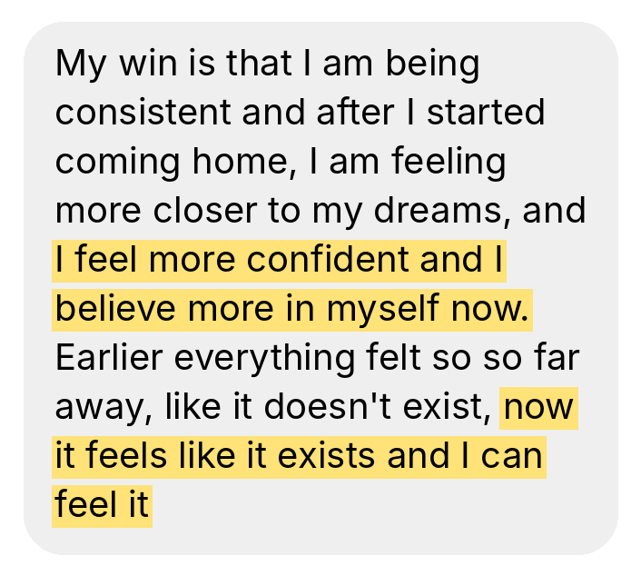
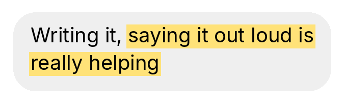
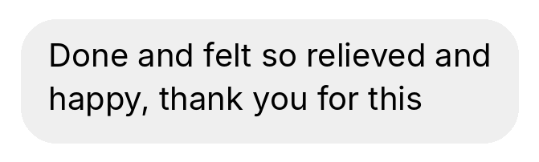
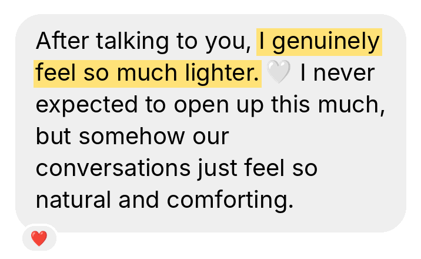
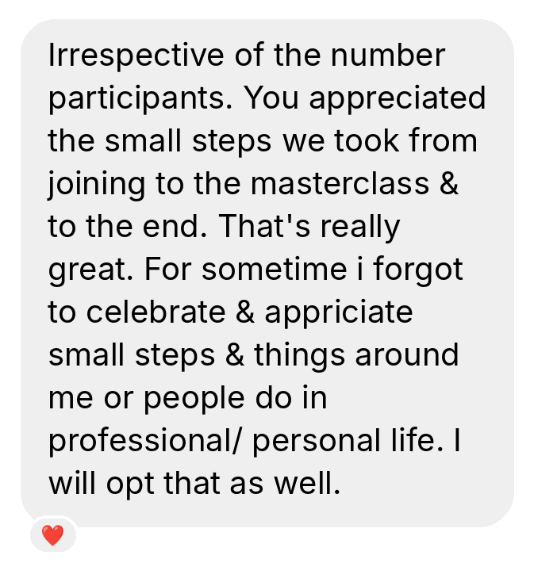

Coming Home · a 3-month experience with me
The life you keep postponing starts HERE.
For spiritual, ambitious women who are good at a job they don't love. Remember who you came here to be, get clear on what you're here to build and start building it, and learn the inner tools to live it fully: from truth, not fear. From abundance, not survival.
From
"I know this job isn't me. But I don't know what else, and I'm scared to even try."
To
"I know what I want. I've started. And for the first time, my life feels like mine."
Where you are
You're not confused. You're POSTPONING.
Monday, 9:30 amThe laptop opens and something in you switches off until Friday.
The bank appYou don't open it, because the number decides how long you have to stay.
"So what's the plan?"Someone at home asks. You laugh it off and change the topic.
After the bonusAfter the appraisal. After Diwali. "A few more months" has been your plan for two years.
2 amYou already know what you want. You just haven't let yourself say it out loud.
Six weeks from now
You stop waiting for your life and start LIVING it.
- MondayYou wake up knowing who you are and what you're here to build. Your day feels like YOURS again, even the parts that haven't changed yet.
- The bank appYou open it and nothing in you tightens. The number is just a number today. You know more is on its way, because you've already started letting it in.
- The call homeYour mum says, "You sound different. Happy." You haven't told her anything yet. She can hear it in your voice.
- Monday, 9:30You say what you want once, calmly, and you don't take it back. No over-explaining. Someone at work asks, "What's changed with you?"
- Your name on itYour first offer is out in the world, at a price you said out loud without flinching.
- The old voiceThe bonus lands, "one more year" starts up. You know exactly what it is, and you keep walking.

Why I made this
I didn't need another plan. I needed to come HOME.
For years I thought I was missing information. I wasn't. I was short of permission, and the only person who could give it was me.
What changed everything was simple and uncomfortable: see my life as it is, stay with the fear until it lost its grip, and then live from who I really am instead of what I was taught. And then the life started moving towards me.
Coming Home is exactly that, step by step, with me beside you.
The six weeks
See it. Stay with it. Live it.
Three months with me. The first six weeks are guided, one step a week. The next six, you live it, with me and the group beside you. Every guided week you do two things: the inner work (lessons, a guided meditation, a ritual) and a real action in your life, with a live call with me to get you through it.
- 01See it
Whose life is this?
The rules you never chose: the right job, the right age, the right plan. You find the ones running your life that were never yours, and you give them back.
- 02See it
You already know
Want vs should. Fear vs your gut, felt in your body instead of argued in your head. By the end of the week you've named what you actually want.
- 03Stay
Why you keep snapping back
Why "a few more months" feels so reasonable, why "what will people say" feels so loud, and how to stay with the fear without running back.
- 04Stay
The script you were handed
Find the one belief running the show and rewrite it. Then take your first step where people can see it.
- 05Live
Let it in: money & your first paid thing
The money rules you grew up with, and the ones you choose now. Receiving without guilt. Your first offer, priced and out in the world, and your price said out loud.
- 06Live
Live as your higher self
You stop visiting your higher self and start living as them: you ask for what you want without apologising, you rest without guilt, you choose without asking five people first. Your way back for the days the old life pulls. And a ritual to walk through your own door as the person you came here to be.
What you get
Every week ends with a RITUAL.
A candle, a jar, a line on the floor, your own front door. Done with your hands and your body, so the change doesn't stay in your head. Nobody else teaches it this way.
In their words
"Earlier everything felt so far away. Now it feels like it EXISTS."










Read this first
Coming Home is NOT for everyone.
This IS for you if
- You're the one everyone calls "sorted". Good job, good salary, a family that's proud. And you feel NOTHING on a Monday morning.
- You've been "about to" for months: the course, the side thing, the resignation mail sitting in drafts.
- You know there's something you came here to do. You can almost name it.
- You're done collecting reels and advice. You want to move, with someone who has already done it.
- You're ready to invest real time and money in yourself.
This is NOT for you if
- You want someone to decide for you. In here, you make your own decisions, from a very different place.
- You're looking for a quick hack or a certificate.
- You'll join and not show up. This works when YOU do the work.
- Staying comfortable matters more to you than living your own life.
Your investment
₹49,999
3 months with me: 6 guided weeks, then 6 weeks of living it · a live call with me every week · the community · lifetime access
Already had your call and got the go-ahead? Join here.
How you join
- 1Book your Coming Home call. 45 minutes with me. Answer a few questions first so I know where you are.
- 2We talk honestly about where you are, where you want to be, and whether Coming Home is how you get there. It's not a coaching session. It's how we both decide.
- 3If it's a yes, you get your link, join, and we begin. Your next six weeks look NOTHING like your last six years.
Before you book
- This call is about Coming Home. Book it if you're seriously thinking of joining. It's not a free coaching session.
- Come ready to decide. If it's a fit for both of us, you can join on the call itself. If it's not, I'll tell you honestly. No pressure either way.
- Show up. 45 minutes, on time, camera on, somewhere you can talk freely. Can't make it? Reschedule from your confirmation email at least 24 hours before. A no-show takes the spot from someone who needed it.
Questions people ask me
Before you decide.
How does it actually work? What are the timings?
Every week, new lessons open that you watch on your own time, usually in the evening after work. You do one practice a day and one ritual at the end of the week. Then we meet live once a week. We fix a call slot that works for the group, and I'll share it on our call before you join.
Is it just me and some recordings, on my own?
No. You see me live every week, you're in the community with me and the others for 3 months, and you bring your real situation to the call. You won't be doing this alone.
I don't even know what I want. How will I figure out what fits?
That's what weeks 1 and 2 are for. Most people who say "I don't know" do know. It's buried under years of "should". We clear the shoulds first, and what's left is usually what you've wanted for a long time.
Do I have to quit my job?
No. Most people do the six weeks with their job still running. What changes is who's making the choices: you, not your fear.
I've tried before and it didn't work. What if it happens again?
That "what if" is exactly what week 3 is about. You didn't fail because you aren't capable. You snapped back because nobody showed you how to stay. This time you'll have the tools, the group and me.
₹49,999 is a lot for me right now.
It's a real investment, and I want you to make it from a calm place, not a panicked one. Ask yourself what another year of "a few more months" is costing you. Then let's talk on the call. If it isn't the right time, I'll tell you honestly.
My family won't support this.
Coming Home isn't about convincing anyone. It's about you feeling at home in yourself. When you're truly there, people feel it, and that changes the conversations more than any argument ever could.
Did you have a plan when you quit?
No plan, no next job, no backup. I don't ask you to do it my way. I show you how to make your own move, at your own pace, from a place you can trust.
A note from me
A few more months is not a plan. It's a feeling wearing the plan's clothes.
You didn't find this page by accident. If something in you said "this is me", listen to it.
I still have fears and bad days. The difference is they don't run my life anymore. That's what I want for you.
love, Deepshikha